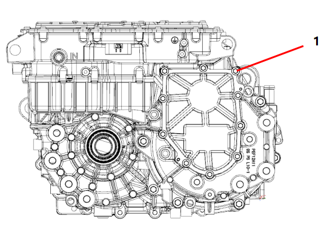
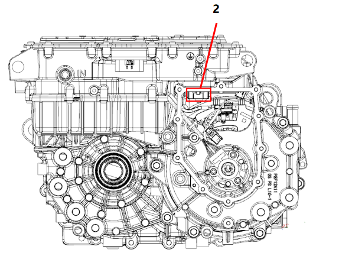
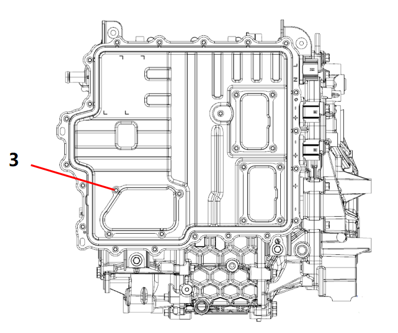
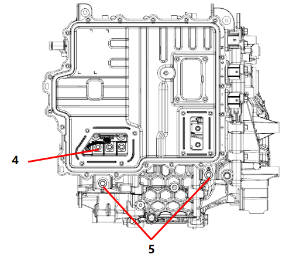
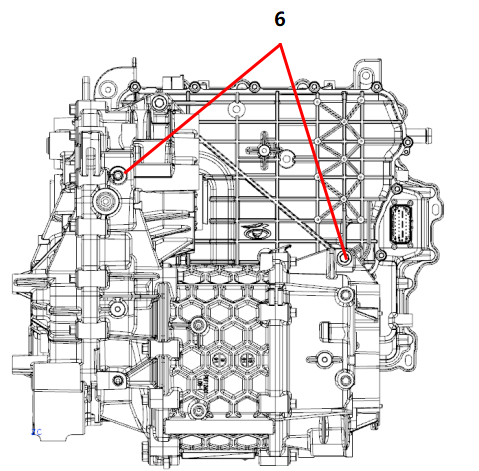
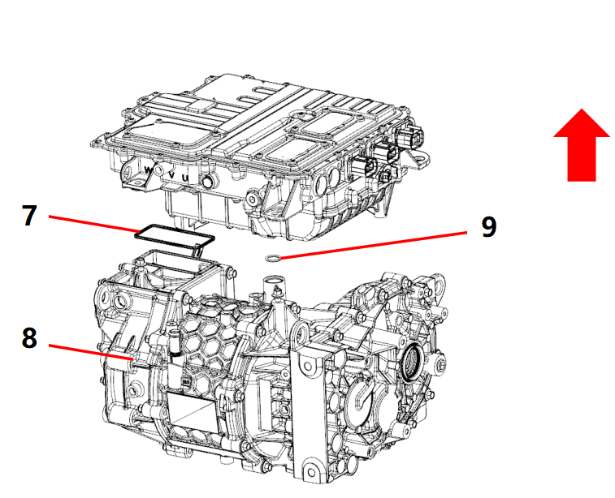
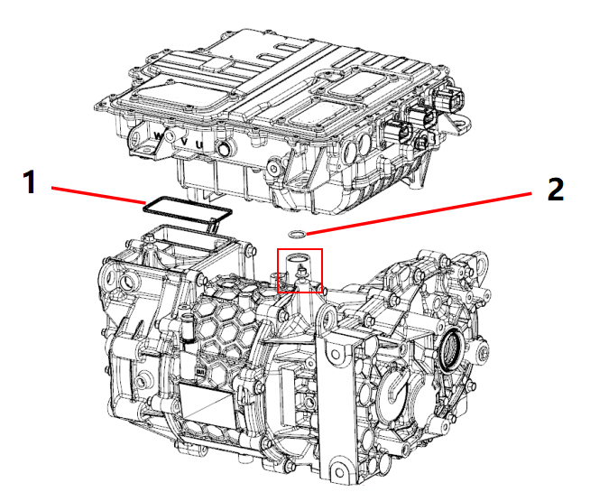
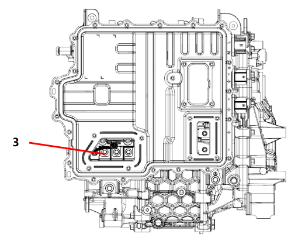
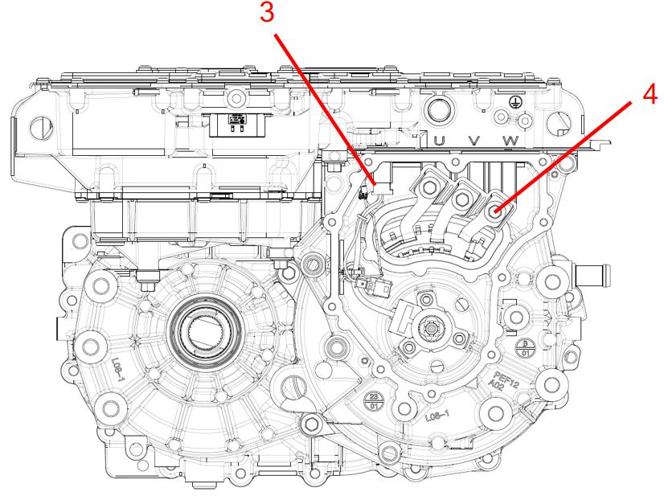
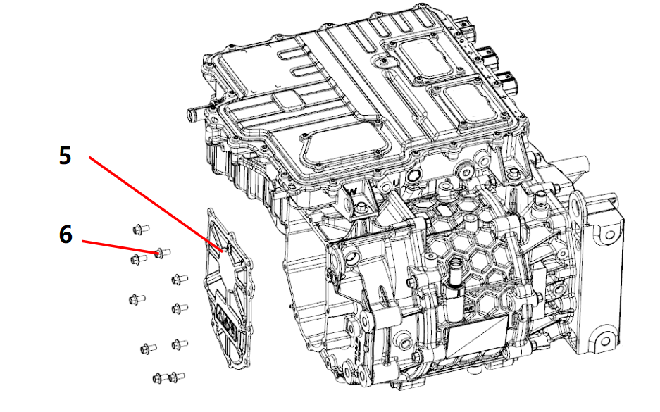

|
№ |
Операционные процессы |
Требования к сборке |
Инструмент / Вспомогательные материалы |
Меры предосторожности |
|
1 |
Снятие контроллера электродвигателя в сборе |
A: Использовать пневматический пистолет, торцевую головку на 8#, снять 10 болтов соединения крышки клеммной коробки электродвигателя (Рисунок 1).  B: Осторожно отвести вверх 2 фиксатора разъема в местах, показанных на рисунке, потянуть вниз и снять разъем статора резольвера в сборе, отсоединив жгут проводов резольвера.  C: Очистить поверхность стыка корпуса от герметика. D: Использовать Динамометрический ключ, торцевую головку T25, снять 4 болта крышки трехфазных клемм контроллера (Рисунок 3).  E: Использовать Динамометрический ключ, торцевую головку на 8#, снять 3 болта соединения медных шин (Рисунок 4)  F: Использовать пневматический пистолет, торцевую головку на 10#, снять 2 болта соединения сверху контроллера электродвигателя в сборе (Рисунок 5), снять 2 болта соединения снизу контроллера электродвигателя в сборе (Рисунок 6).  G: Слегка покачивая контроллер электродвигателя в сборе, снять его строго вертикально вверх; в процессе необходимо следить за тем, чтобы усилие было направлено строго вертикально вверх, чтобы избежать повреждения штуцера Выход охлаждающей жидкости контроллера (при изгибе он легко ломается).  H: После Снятие контроллера необходимо снять и утилизировать уплотнительное кольцо штуцера Выход охлаждающей жидкости контроллера (Рисунок 8), снять квадратное уплотнительное кольцо в месте Установка задней торцевой крышки электродвигателя (Рисунок 7) для последующего использования. I: Сломать фиксирующие лапки вентиляционного клапана в месте, показанном на Рисунке 9, снять вентиляционный клапан (Рисунок 9) и утилизировать его; следить за тем, чтобы отломанные пластиковые лапки вентиляционного клапана не попали внутрь электродвигателя |
Пневматический пистолет, Динамометрический ключ, торцевая головка |
1. Предотвращать попадание посторонних предметов внутрь корпуса тягового электродвигателя. 2. При Снятие контроллера избегать приложения чрезмерных усилий |
|
2 |
Установка контроллера электродвигателя в сборе |
A: Перед Установка контроллера проверить трехфазные уплотнительные кольца в месте 1, показанном на рисунке; если нет повреждений и перекручивания, их можно продолжать использовать; в месте 2, показанном на рисунке, выполнить Установка нового уплотнительного кольца штуцера Выход охлаждающей жидкости контроллера. Перед соединением корпусов очистить штуцер охлаждающей жидкости, показанный в квадратной рамке на рисунке, от загрязнений и нанести небольшое количество охлаждающей жидкости.  B: Выровнять штуцеры Вход и Выход охлаждающей жидкости в направлении, показанном на рисунке, установить контроллер электродвигателя в сборе вертикально вниз. В процессе категорически запрещается использовать молоток для осаживания на место или притягивать болтами; необходимо слегка покачивать контроллер электродвигателя в сборе, чтобы он встал на место естественным образом под действием силы тяжести; критерием того, что он встал на место, является прилегание поверхностей 4 соединительных болтов. C: Использовать Динамометрический ключ, торцевую головку на 10# для Установка и затяжки 4 соединительных болтов контроллера. D: Использовать Динамометрический ключ, торцевую головку на 8# для поочередной затяжки болтов Установка трехфазных проводов (Рисунок 3), момент затяжки составляет 10 Nm ± 1 Nm.  E: Подсоединить разъем контроллера электродвигателя в сборе к разъему статора резольвера в сборе и слегка потянуть за разъем, чтобы Подтвердить надежность соединения (Рисунок 4)  F: С помощью клеевого пистолета равномерно нанести полоску герметика Bosenwell 5989 по внутреннему краю резьбы на уплотнительную поверхность крышки клеммной коробки электродвигателя в сборе; обратить Внимание на то, чтобы ширина полоски герметика была равномерной, разрывы полоски герметика не допускаются; сборка крышки клеммной коробки (Рисунок 6) должна быть завершена в течение 5 мин после окончания нанесения герметика.  G: Использовать Динамометрический ключ, торцевую головку на 8# для диагональной затяжки соединительных болтов крышки клеммной коробки (Рисунок 5), момент затяжки составляет 10 Nm ± 1 Nm. H: После завершения сборки выполнить проверку герметичности водяных каналов и проверку герметичности полости, затем собрать вентиляционный клапан. |
Динамометрический ключ, торцевая головка, клеевой пистолет, герметик Bosenwell 5989 |
1. При размещении электродвигателя и контроллера электродвигателя в сборе обратить Внимание, чтобы избежать повреждений. 2. В процессе обратить Внимание на предотвращение попадания посторонних предметов внутрь электродвигателя, обратить Внимание на предотвращение повреждений деталей внутри задней торцевой крышки. 3. В процессе Установка контроллера электродвигателя в сборе категорически запрещается использовать молоток для осаживания на место или притягивать болтами; необходимо слегка покачивать контроллер электродвигателя в сборе, чтобы он встал на место естественным образом под действием силы тяжести. 4. При затягивании болтов трехфазных проводов момент затяжки должен соответствовать Требования: 10 Nm ± 1 Nm. |
|
3 |
Подтвердить |
Очистить и проверить внешний вид системы электропривода в сборе |